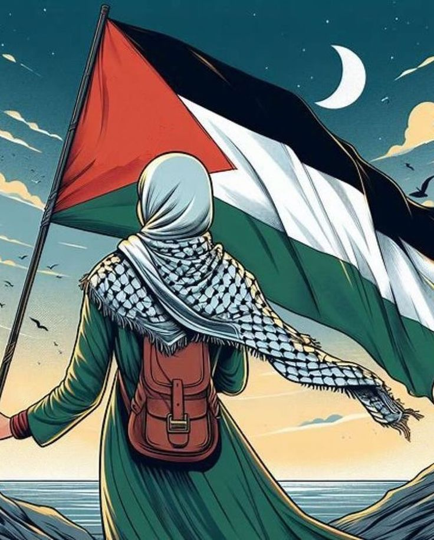

in palestine we have a lot of cultures
in this page we will show u some of it:
Language and Dialect
Language:
Arabic is the official language of Palestine, and it is the primary means of communication among Palestinians. The Arabic spoken in Palestine includes various dialects, with the Palestinian dialect being distinct from other Arabic dialects.
Dialect:
The Palestinian dialect (often referred to as "Palestinian Arabic") has unique phrases and pronunciations that can vary between regions (e.g., West Bank, Gaza, and among Palestinian communities abroad). It reflects local expressions, cultural references, and historical influences.
Art and Literature
Art:
Palestinian art encompasses a wide range of forms, including painting, sculpture, and traditional crafts. Artists often draw inspiration from their cultural heritage, social issues, and the Palestinian experience. Notable contemporary artists include Sliman Mansour and Emily Jacir.
Literature:
Palestinian literature has a rich tradition, particularly in poetry. Mahmoud Darwish is perhaps the most renowned Palestinian poet, whose works explore themes of identity, exile, and longing. Prose writers, such as Ghassan Kanafani, also address the Palestinian experience through novels and short stories.
Cuisine
Traditional Dishes:
Traditional Dishes: Palestinian cuisine is known for its rich flavors and variety. Common dishes include what we mention in FOOD part
Traditional Clothing
Thobe:
Palestinian women are known for their unique embroidery techniques, with patterns often representing specific villages or regions.
Keffiyeh:
A traditional scarf, usually black and white or red and white, worn by men and symbolizing Palestinian identity and solidarity.
Embroidery:
Palestinian women are known for their unique embroidery techniques, with patterns often representing specific villages or regions.
for more details Please Login